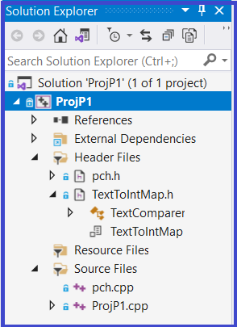

Project Part 1
0. Reference material
1. Getting Setup For ProjP1
1. Setup
1.1 Get the L5Starter Download
- Download ProjP1Starter.zip to your machine - to be used on a subsequent steps
1.2 Copy Map2.hpp from the ProjP1Starter.zip
- Inside ProjP1Starter.zip is a file named Map2.hpp
- For this assignment you will be making changes to this file
- Copy Map2.hpp to the following folder on in your local repo: CppDevSp21/components/include/Map
1.3 Create ProjP1
- Use VS2019 to create a project named ProjP1 in your local CppDevSp21 repo, make it a unit test project, don't forget to make the appropriate changes to the project's settings
- From the ProjP1Starter.zip copy the following files:
- TextToIntMap.h to the folder CppDevsp21/ProjP1 folder (just created by VS2019 on previous step)
Add this .h file to the projects Header Files folder (see screenshot to the right)
- ProjP1.cpp to the folder CppDevsp21/ProjP1 folder (just created by VS2019 on previous step) and replace with the same name just created by VS2019
- The ProjP1.cpp from the starter .zip contains a set of unit tests that work in Debug mode that will get you started
- When you are finished, your project should look like the one to the right
- If all steps have been executed correctly, it will build an Test Explorer will run the tests
|
 |
2. ProjP1 Statement of Work
2.1 Primary Objectives
The primary objective of this assignment is to provide you experience with:
- Layering a component (e.g., Map) on multiple already existing components (e.g., Queue and StaticArray)
- Investigate software engineering concepts related to loop design, loop invariants, and progress metrics
- Revisit a hashing implementation of Map
2.2 Specifics
Part1 - Initial Configuration of Map2.hpp
The member functions in Map2 have been stubbed out which means that each member function body has no code, just the header and a set of open and closed curly braces for a body |
|
Part 2 - Layering a Component
Open VS2019 and begin working on Map2.hpp by first finding comments that begin with Step X (where X is a number from 1 to 8). Start with Step 1 and work your way through to Step 8, carefully following the instructions of each Step.
Step 8 recommends that you first implement and test the Standard Operations, do that.
Open up Visual Studio's Test Explorer and run the unit tests in ProjP1.cpp (supplied in the starter .zip)
Next finish the add operation, the code is below. Copy and past this code into Map2's stubbed out add operation
template <class K, class V, class KCompare>
void Map2<K, V, KCompare>::add(K& key, V& value)
{
Integer bucket = KCompare::hashCode(key) % hashTableBounds::arraySize;
MapPairRecord newPair;
newPair.keyItem.transferFrom(key);
newPair.valueItem.transferFrom(value);
map[bucket].enqueue(newPair);
mapSize++;
} // add |
Now finish the remainder of the operations found in Map2.hpp, these stubbed out operations are marked with TODO. Follow the "TODO's" instructions to implement each of these other Map2 operations
Important Restrictions:
- Use KCompare's operations - use KCompare's areEqual and hashCode operations. areEqual is used to compare two Key values for being equal and hashCode returns an integer value that represents the Key. These are call back operations to client supplied code. Only the client, who supplied the Key and Value data types knows how to implement these operations that compare two Key values and convert the Key type to a corresponding integer value.
- Hashing - Division Method - You must use the division method for this assignment for your hashing algorithm
- No cross calling - None of Map's member functions are permitted to make calls to any of the other public Map member functions, i.e., no cross calling
- No recursion - None of Map's member functions are permitted to be recursive, use iteration
- Use Design by Contract - No defensive programming of Map's operations.
- Making copies - Move (transfer) data, do not unnecessarily copy it. The only operation where a call to StaticArray's assignment operator is permitted is in the Map2's operator =. Do not call operator = to make a copy of an array, Queue, or variable of type K or V in any implementation of the other Map2 member functions.
If you think you need to call operator = to make a copy in any Map operation (other than Map's operator =), then rethink your algorithm until you figure out a way to not make a copy.
- Loop engineering - use the correct loop construct - You must choose between a definite loop construct (for loop) and an indefinite loop construct (while loop), do this based on the looping situation
- Linear search -When searching a bucket in the hash table for a particular key value, a linear search must be performed
- No gratuitous waste of time - During the search for a key, once the key has been found, then the loop must terminate and not continue to examine the remainder of the keys in the bucket
3. Testing
- To the right is a numbered checklist identifying all the work that needs to be done
- Supplied in the starter .zip download is the file ProjP1.cpp
- Use the unit tests found in ProjP1.cpp in Debug configuration only
- These tests minimally test all of Map2's exported operations
Improved Testing:
- I recommend that you develop additional unit tests - particularly for all the operations that search the hash table
- Bucket #3 is an excellent candidate in the example hash table below:
Search for entries that appear at each end (e.g., DFW and NGB) and at least one in the middle
Also have a failed search go this bucket (as well as bucket #0)
|
|
The Grader's test cases:
Grading will be done running a more complete set of unit tests which will systematically stress your member function implementations
4. Submitting the Assignment for Grading
- Follow VS2019 instructions for committing and pushing your L5 project to your GitHub Education CSSE373 repo
- Use the commit message "L5 final commit, ready for grading"